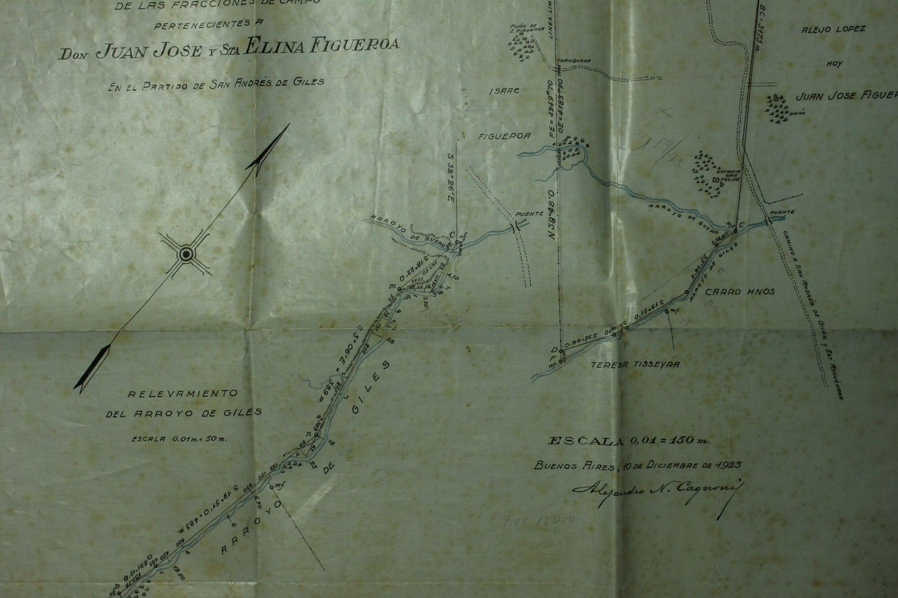
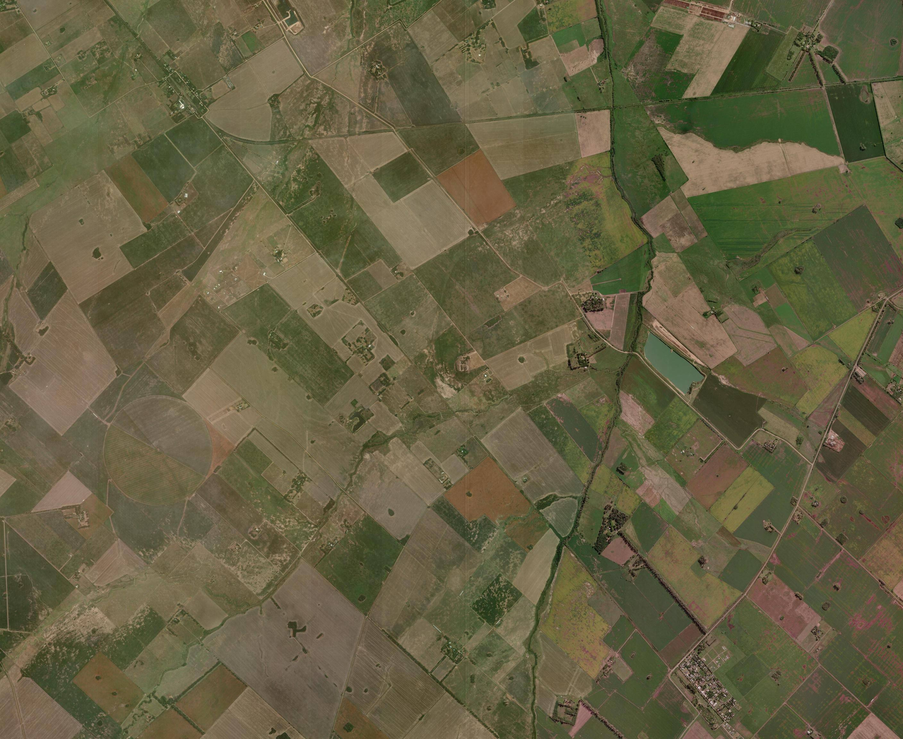
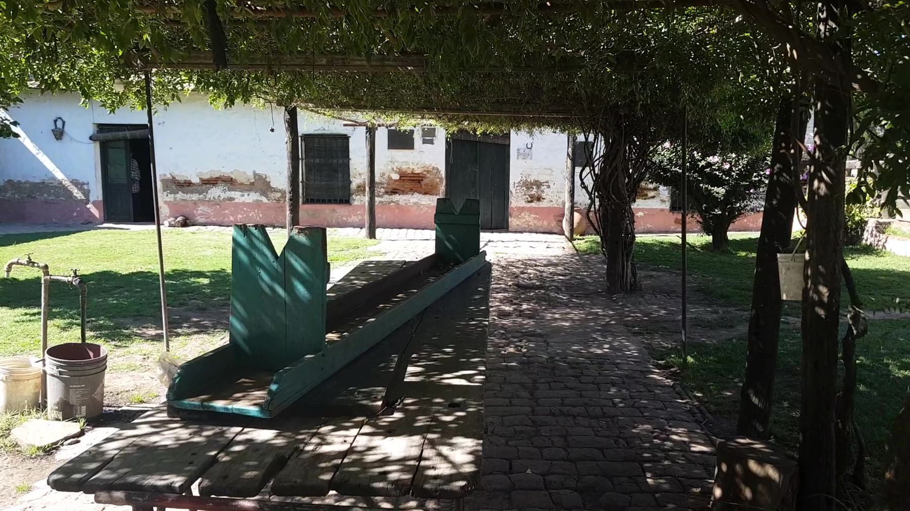
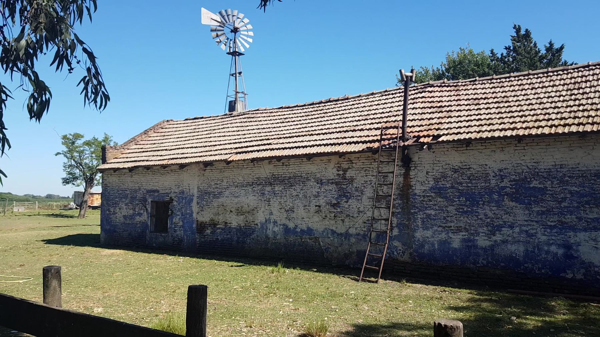

Categorías del régimen
Art. 4º de la Ord. 2182/19, ampliado por la Ord. 2446/21. Un bien puede tener doble encuadre.
Comisión Municipal Asesora de Patrimonio Cultural · Ord. 2182/19
Inventario nominal de los bienes declarados por el Honorable Concejo Deliberante desde 1988, reconstruido inciso por inciso a partir del texto de cada ordenanza, con su localización sobre imagen satelital, el parcelario vigente y las mensuras históricas del Archivo de Geodesia.
 Monumento Histórico Nacional · Decreto 616/2021La Merced · Posta de FigueroaNube LiDAR, vuelos de dron, mensuras desde 1826 y la carta de Rosas a Quiroga →
Monumento Histórico Nacional · Decreto 616/2021La Merced · Posta de FigueroaNube LiDAR, vuelos de dron, mensuras desde 1826 y la carta de Rosas a Quiroga →
Art. 4º de la Ord. 2182/19, ampliado por la Ord. 2446/21. Un bien puede tener doble encuadre.
Asientos del Registro Oficial según el año de la ordenanza de origen.
Un registro no es sólo un listado: es la decisión colectiva sobre qué merece durar. Cada asiento de este inventario abre una pregunta — qué se protege, para quién, y qué queda fuera de la mirada normativa.
Catálogo
Una ficha por asiento del Registro Oficial (103 bienes con ordenanza) y por cada asiento sin respaldo de ordenanza (12).
Circuitos autoguiados y recorridos territoriales
Recorridos temáticos para descubrir el patrimonio histórico, arquitectónico y rural de San Andrés de Giles a pie, en bicicleta o en vehículo.
Elegí la localidad, el modo de transporte y las categorías de interés para calcular una ruta optimizada entre sitios patrimoniales.
Patrimonio vivo, tradiciones y efemérides
Agenda anual de festividades patronales, fiestas populares gastronómicas, conmemoraciones y vigilias comunitarias de San Andrés de Giles.
Marco normativo
Régimen orgánico y ordenanzas declaratorias del H.C.D., con el número de asientos que cada una genera en el Registro.
Asiento Nº 1 del Registro · Cuartel VII · Camino Real al Alto Perú
El bien más importante del patrimonio gilense: casco de estancia colonial, posta del Camino Real, escenario de la carta que Rosas escribió a Quiroga el 20 de diciembre de 1834. Declarado en los tres niveles del Estado.
Con el sepulcro de Enrique José de Larrañaga (Sepulcro Histórico Nacional, Decreto 633/2017), es uno de los dos bienes del partido con declaratoria nacional, y el único edificio.
 Relevamiento 2021Nube de puntos LiDARCinco millones de puntos del escaneo láser: girá, caminá el patio, entrá a la galería.
Relevamiento 2021Nube de puntos LiDARCinco millones de puntos del escaneo láser: girá, caminá el patio, entrá a la galería.
 4 de marzo de 2021Vuelos de dronPanorámicas aéreas, clips en 4K y las trayectorias GPS sobre el satélite.
4 de marzo de 2021Vuelos de dronPanorámicas aéreas, clips en 4K y las trayectorias GPS sobre el satélite.

Atlas de mensuras · 1826–1923El suelo medidoCómo se partió la estancia de los Figueroa y qué caminos anotaron los agrimensores.
Abierto en 1663Camino de postasTres o cuatro leguas: la medida de un caballo entre el Sauce y el Río Areco. 20 de diciembre de 1834La Carta de la Hacienda de FigueroaRosas a Quiroga, sobre la Constitución y el tiempo de la Nación.
20 de diciembre de 1834La Carta de la Hacienda de FigueroaRosas a Quiroga, sobre la Constitución y el tiempo de la Nación.

Lectura contemporáneaFrancisco y la carta«El todo es superior a la parte»: la pregunta por el pueblo antes que por la forma.
Informe CNMLBH 2021Estado de conservaciónForma bien conservada, materia con deterioro mediano: qué cuidar primero. 1711–2021CronologíaDe Tomás Figueroa a la declaratoria nacional, año por año.
1711–2021CronologíaDe Tomás Figueroa a la declaratoria nacional, año por año.
¿Qué hace que un lugar sea monumento: lo que pasó en él, o lo que todavía somos capaces de leer en sus muros, sus caminos y sus papeles?